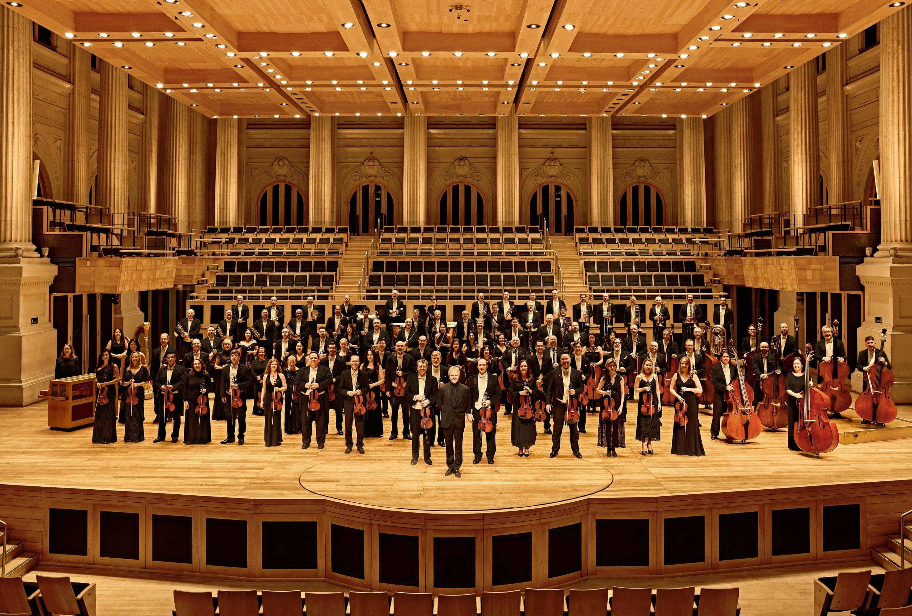
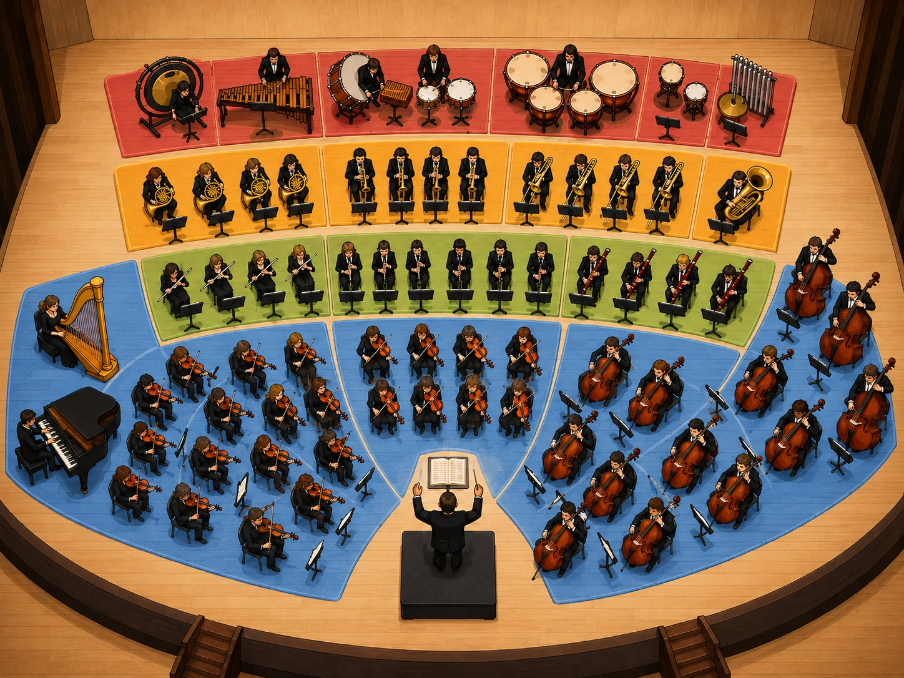
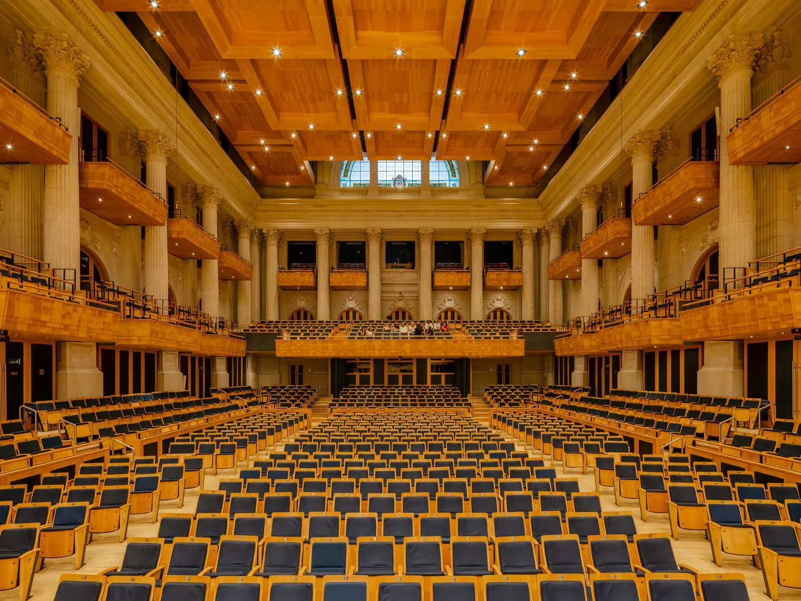

Conhecer a orquestra
Identificar seus principais instrumentos e famílias.
Grupo 5 · Trabalho de Matemática · 2026
Como números, formas e proporções ajudam a construir o som
Apresentação do grupo
Tema: Instrumentos musicais e Matemática
Integrantes
Caio França
Enzo Mota
Gabriel Andozia
Julio Menezes
Roteiro da pesquisa
Como os instrumentos produzem som e de que maneira a Matemática participa de sua construção e afinação?
Identificar seus principais instrumentos e famílias.
Explicar o que vibra e como cada família produz som.
Entender como comprimento, tamanho e formato alteram sons graves e agudos.
Identificar cálculos, fórmulas, medidas e proporções usados na construção dos instrumentos.
Famosa sala de concertos localizada no Complexo Cultural Júlio Prestes, a Sala São Paulo é a casa da Orquestra Sinfônica do Estado de São Paulo, a Osesp. Em seu palco, músicos das famílias das cordas, madeiras, metais e percussão se unem para formar uma orquestra.
Além da execução dos músicos, a experiência sonora também depende da arquitetura. O palco, as paredes, os balcões, as poltronas, os materiais e o teto móvel influenciam a maneira como as ondas sonoras se espalham pelo ambiente.
Por isso, a Sala São Paulo representa uma conexão entre música, instrumentos, Física e Matemática.
É o principal espaço de apresentação da Orquestra Sinfônica do Estado de São Paulo.
O forro é composto por 15 painéis móveis, que permitem adaptar a resposta acústica a diferentes repertórios.
Geometria, volume, materiais, reflexão e reverberação participam do planejamento acústico da sala.
Uma orquestra sinfônica é um grande conjunto de músicos que executam obras sob a orientação de um maestro. Seus instrumentos são organizados em quatro grandes famílias: cordas, madeiras, metais e percussão.
A disposição dos músicos no palco não é aleatória. As cordas normalmente ficam mais próximas do maestro, as madeiras ocupam a região central, os metais aparecem atrás e a percussão fica ao fundo. Essa organização ajuda a equilibrar instrumentos de intensidades e timbres diferentes.

Entenda como cada família de instrumentos produz o som.
Instrumentos
Ative ou pause cada família para montar uma música instrumental original em camadas. Passe o mouse pelo palco para identificar as posições.

Conceitos básicos
Todo som começa com uma vibração. Quando uma corda, uma membrana, uma barra ou uma coluna de ar vibra, ela movimenta o ar ao seu redor. Essa perturbação se transforma em uma onda sonora, que se propaga até o ouvido e é interpretada pelo cérebro.
Número de vibrações realizadas por segundo.
Tempo necessário para completar uma vibração.
T = 1 / fDistância ocupada por um ciclo completo da onda.
λ = v / fRepresenta o tamanho da oscilação da onda e está relacionada à intensidade sonora.
Frequência
Todo som começa com uma vibração. A velocidade com que essa vibração acontece determina se o som será percebido como grave ou agudo.
Menos vibrações
O som grave possui uma frequência mais baixa, realizando menos vibrações por segundo.
Mais vibrações
O som agudo possui uma frequência mais alta, realizando mais vibrações por segundo.
Menor frequência→ som mais grave Maior frequência→ som mais agudo
O Que É Frequência?
Frequência é a quantidade de ciclos ou vibrações que acontecem durante um intervalo de tempo. Ela é medida em hertz, representado por Hz. Um som de 440 Hz, por exemplo, corresponde a 440 vibrações por segundo.
Fórmula
Exemplo
Se uma fonte realiza 200 vibrações em 1 segundo, sua frequência é 200 Hz.
Simulador de Frequência
Movimente o controle e observe como o aumento ou a diminuição da frequência modifica a onda e a altura do som.
Frequência nas famílias
Cada família instrumental utiliza um mecanismo diferente para modificar a frequência. Em alguns instrumentos muda-se o comprimento de uma corda; em outros, o caminho do ar, a tensão de uma membrana ou o tamanho de uma barra.
A frequência depende principalmente do comprimento, da tensão, da espessura e do material da corda.
Quando o músico pressiona uma corda, seu comprimento vibrante diminui e a nota fica mais aguda.
Furos e chaves alteram o comprimento efetivo da coluna de ar.
Ao abrir determinados furos, o caminho do ar diminui e a frequência tende a aumentar.
A frequência muda pela vibração dos lábios e pela alteração do comprimento do tubo.
Válvulas acrescentam trechos de tubo, enquanto a vara do trombone aumenta ou diminui o caminho do ar.
A frequência depende da parte que vibra.
Essas relações são utilizadas tanto pelos músicos quanto pelos profissionais que projetam e constroem os instrumentos.
6 · Matemática na construção
As medidas não são escolhidas aleatoriamente. Comprimento, tensão, material, espessura, furos, válvulas e formato ajudam o construtor a estimar as frequências antes dos testes e ajustes finais.
As fórmulas são modelos iniciais: orientam a construção, mas instrumentos reais também exigem medições, escuta e pequenos ajustes.
| Família | Modelo principal |
|---|---|
| Cordas | Corda tensionada |
| Madeiras | Coluna de ar |
| Metais | Ressonâncias e comprimento acústico |
| Percussão | Membranas, barras e placas |
Cordas
Violino, viola, violoncelo, contrabaixo, harpa e piano são cordas friccionadas, dedilhadas ou percutidas. O construtor combina comprimento vibrante, tensão, calibre, material, cavalete e corpo ressonante.
A velocidade da onda aumenta com a tensão e diminui quando a corda tem mais massa por metro.
Para um simulador da nota principal, use n = 1.
n = 1 é a fundamental; n = 2, 3 e 4 são harmônicos. A densidade linear é μ = m/ℓ: massa de um trecho dividida pelo seu comprimento. Cordas grossas ou de material mais denso tendem a ter μ maior.
f ∝ 1/L: reduzir L à metade dobra f. f ∝ √Fᵀ: para dobrar f apenas pela tensão, Fᵀ precisa quadruplicar. f ∝ 1/√μ: quadruplicar μ reduz f à metade.
Violino usa cordas mais curtas e leves para registros altos; contrabaixo usa cordas maiores e densas. No piano, as graves são longas, grossas e muitas vezes enroladas; a tábua harmônica irradia o som.
Limite do modelo: a fórmula descreve uma corda ideal, não o timbre completo, a vibração do cavalete e da madeira, o volume ou as ressonâncias internas.
Madeiras
Flautim, flauta, oboé, clarinete, fagote e contrafagote dependem da coluna de ar dentro do corpo/tubo. Furos, chaves, embocadura, palheta, diâmetro e conicidade orientam a construção.
O comprimento acústico efetivo é a parte da coluna de ar que vibra principalmente para uma nota; ele não é sempre igual à medida externa com régua.
A flauta se aproxima de um tubo aberto; o clarinete cilíndrico, de um fechado em uma extremidade.
No tubo fechado, 2n−1 produz os modos ímpares 1, 3, 5, 7… A fundamental de um tubo fechado ideal com o mesmo comprimento é aproximadamente metade da de um tubo aberto.
f ∝ 1/Lₑf: dobrar o comprimento reduz aproximadamente a fundamental pela metade. A 20 °C, v é cerca de 343 m/s; se v aumenta, a ressonância também aumenta um pouco.
Flautim: coluna menor, notas mais altas. Fagote: tubo longo e dobrado, notas mais baixas. A posição dos furos também depende de diâmetro, chaminé, interação entre furos e formato interno.
Limite do modelo: embocadura, palheta, campana, correção de extremidade, diâmetro e conicidade tornam o instrumento real mais complexo.
Metais
No trompete, trompa, trombone e tuba, os lábios vibram no bocal e interagem com as ressonâncias da coluna de ar. Tubo, bocal, campana e partes cilíndricas ou cônicas formam um sistema integrado.
O músico também muda a tensão e o formato dos lábios para escolher ressonâncias diferentes.
Para 1 semitom, ΔL ≈ 0,0595L; para 2, ≈ 0,1225L; para 3, ≈ 0,1892L. Cada válvula insere um trecho calculado para alterar a nota.
No trompete, combinações de três válvulas criam notas intermediárias. No trombone, a vara muda L continuamente. Trompa e tuba enrolam vários metros de tubo para caberem no instrumento.
Combinar válvulas pode desafinar porque cada uma foi dimensionada para o tubo inicial. Por isso há bombas móveis, válvulas extras e correção do músico.
Limite do modelo: bocal, garganta, campana e perfil do tubo alteram as ressonâncias; comprimento é uma ótima primeira aproximação, não o instrumento inteiro.
Percussão
Membranas, barras, placas e discos vibram de maneiras diferentes. Tímpano, xilofone e marimba permitem modelos úteis; pratos, gongos e triângulos têm muitos modos complexos.
Raio, material, espessura, densidade superficial, tensão, corpo e pedal definem a afinação.
Comprimento, espessura, largura, rigidez, densidade, entalhe e pontos de apoio afinam cada barra.
Pratos, triângulos e gongos produzem modos simultâneos e não têm uma única nota simples.
Elas vibram em duas dimensões, com círculos e linhas nodais descritos por funções de Bessel. Dobrar R reduz f aproximadamente à metade; quadruplicar Tₘ dobra f; aumentar σ reduz f. O pedal do tímpano altera Tₘ.
f ∝ 1/L²: dobrar L reduz a frequência para um quarto. Também vale f ∝ h e f ∝ √E/√ρ. Remover material no entalhe inferior reduz rigidez e permite o ajuste fino.
Diâmetro, espessura, curvatura, liga, distribuição de massa e suspensão controlam vários modos não harmônicos. Por isso não existe uma conta única para todo o som.
Limite do modelo: membranas reais têm rigidez, ar interno e corpo; barras reais têm entalhes e formatos que se afastam do modelo uniforme.
Em violino, viola, violoncelo, contrabaixo, harpa, piano e alguns instrumentos de percussão, o corpo transmite a vibração e movimenta mais ar. Volume, abertura, espessura, curvatura e material alteram projeção e timbre.
Abertura maior eleva a ressonância; volume ou abertura efetivamente mais longa a reduzem.
Ele descreve bem garrafas e ressonadores simples e aproxima uma das ressonâncias do ar interno de instrumentos de corda.
Em um instrumento real, tampo, fundo, laterais, cavalete e tábua harmônica também vibram e ajudam a irradiar o som.
Limite do modelo: não representa sozinho todas as ressonâncias e o timbre do instrumento completo.
Experimento interativo
Escolha as dimensões de um instrumento de cordas. O desenho muda na hora e, ao ouvir, você escuta a frequência calculada pelo comprimento do braço.
Altere as medidas para ver o instrumento ganhar forma.
7 · Acústica da sala
Depois de ser produzido, o som se espalha pelo ambiente. As ondas encontram paredes, teto, piso, poltronas e pessoas. Parte da energia é absorvida e parte é refletida.
Reverberação é a permanência do som em um ambiente causada pelas diversas reflexões que continuam chegando ao ouvinte depois que a fonte sonora parou.
01
02
O instrumento produz a nota. O ambiente modifica como ela é ouvida.
8 · Ligação com a Sala São Paulo
Na Sala São Paulo, instrumentos diferentes produzem frequências e timbres variados. Depois de saírem dos instrumentos, as ondas sonoras percorrem o palco e a plateia, encontrando paredes, balcões, poltronas, piso e teto. Esses elementos refletem, absorvem e espalham o som, influenciando a reverberação percebida pelo público.

O volume de ar interfere no tempo de permanência do som.
Madeira, tecidos, paredes e poltronas absorvem ou refletem o som de maneiras diferentes.
Balcões, paredes e superfícies ajudam a distribuir as ondas sonoras.
A posição do teto modifica o volume acústico e ajuda a ajustar a resposta da sala.
Assim como um instrumento pode ser afinado, a resposta acústica de uma sala também pode ser ajustada.
9 · Experimento do teto móvel
Arraste o teto para cima ou para baixo e observe como a mudança de altura modifica o volume e a reverberação estimada.
Leitura matemática em tempo real
Ao elevar o teto, o volume do modelo aumenta e o som leva mais tempo para perder energia.
Teto mais baixo: menor volume, menor reverberação estimada e maior sensação de clareza. Teto mais alto: maior volume, maior reverberação estimada e maior sensação de envolvimento.
Este é um modelo matemático didático inspirado na Sala São Paulo. Ele não representa uma medição oficial nem uma simulação acústica completa.
10 · Conclusões
Instrumentos de cordas, madeiras, metais e percussão têm tamanhos, timbres, intensidades e formas de produzir som diferentes. Cada família cumpre uma função, mas o equilíbrio entre elas cria uma única obra musical.
Instrumentos diferentes, um único resultado.Todo som começa como vibração e se transforma em onda sonora. A frequência indica se uma nota é grave ou aguda, enquanto o instrumento e o ambiente influenciam sua propagação.
Cada nota que ouvimos possui uma frequência.Comprimento, tensão, densidade, espessura, raio, material e formato são combinados para produzir frequências específicas. A Matemática orienta cordas, tubos, furos, válvulas, membranas e barras antes de o instrumento ser tocado.
Antes de virar música, o som começa como medida e cálculo.Volume, formato e materiais modificam a reflexão e a reverberação das ondas sonoras. Na Sala São Paulo, o teto móvel mostra como Matemática e arquitetura adaptam o ambiente a diferentes apresentações.
O instrumento produz o som; a sala transforma a experiência.Esse foi o nosso trabalho